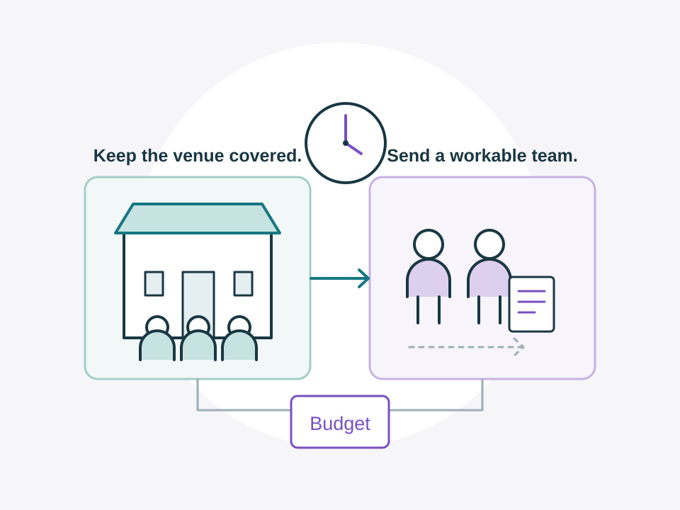

Article 1 / Business decision
The promotion fits. A callout changes the decision.
Compare a supportable $200 outreach deployment with the same assignment after a third staff callout, while customer response remains unknown.

Service and experience operations / Street-team deployment
A $200 outreach deployment fits with five staff available. A third callout changes the operating answer; customer response remains unresolved.

Street-team deployment / Articles
The principal story follows one promotion choice through a consequential callout. A short supporting brief identifies what remains to learn.
Article 1 / Business decision
Compare a supportable $200 outreach deployment with the same assignment after a third staff callout, while customer response remains unknown.
Supporting references
Proposed learning brief reference
Alex and the owner examine the $200 financial hurdle, separate credited admissions from additional business, and agree what to learn before repeating a street-team push.
Street-team deployment / Shared walkthrough
Use the same calculation workflow to compare Alex’s fictional situations or supply your own facts. The principal story and supporting brief share these setup instructions.
In Marketplace → Venue operations, install or update the collection. In Collections, choose Explore example beside Plan a street-team deployment. Explore example supplies fictional inputs; Start with my data creates a blank case. Check the definition version in Case details and the current capture receipt. Older saved cases keep their original versions.
Choose Both to keep inputs beside the answer. Decision summary → Options leads with the supported operating choices and their financial hurdles. Other options reveals blocked alternatives. Next actions, Assumptions and Questions keep the response, scope and unresolved facts separate. Supporting reports explains individual requirements and calculations. A named link beside a deployment opens the relevant report for that deployment; expand its requirement details when you need the underlying checks. Decision process shows the business questions and available responses. In Case details → Calculation history, choose Inspect calculation dependencies to see how the calculation and derived guest thresholds connect. Input groups and report tabs navigate independently.
This produces the first article’s situation: holding and sending one promoter meet the recorded requirements. The one-person plan costs $200; at $40 contribution per genuinely additional guest, five cover its expense and six exceed it. The callout comparison changes only the unavailable count to three and recalculates.
Forms exposes the fields selected by the workflow author. YAML exposes the complete shared case. Neither edits the workflow’s rules. Switching between them preserves an unfinished form but applies nothing; reports continue to describe the saved inputs.
Use Apply inputs for a Forms change. For YAML, use Preview changes, then Apply case changes. Finish or discard a pending edit before applying the other representation. Then choose Calculate or Recalculate. An applied change can make an earlier result stale until its calculation is updated.
The Decision process report tab opens a graph of the business questions and available responses. Follow the labeled arrows: highlighted paths apply to the recorded case, and dashed paths return for reassessment. Use Fit width for an overview, switch Diagram / Table or select a question to inspect its basis. Navigation neither applies inputs nor performs a business action. People still check source facts and control actual spending and dispatch.
Show question breakdown expands navigation to each summary and supporting question. Selecting one changes the view without applying inputs or calculating.
Download Excel and Upload Excel sit above the Forms inputs. What you can edit in Excel describes the supported fields. Apply imported changes and choose Recalculate before using the updated finding.
Alex is the fictional manager in the stories. Sample identifiers and some labels retain the name Sam. The downloadable five-staff and four-staff cases below preserve the exact inputs and calculated findings used in the principal comparison.
The staffing map shows the relationship used in the principal story. The business-effects illustration separates possible revenue and service effects from calculated operating requirements.
The retained on-time Gantt and late-return Gantt explain a separate seven-available-staff timing context. They do not depict the five-versus-four callout comparison or establish measured customer response.
Hermod Labs authored the working implementation. The complete source example, workflow definition and creation commands show how its inputs, operating reasoning and financial calculations fit together.
As an optional exercise, choose another situation where activities share limited staff. Identify the coverage, timing, spending and authority requirements, then decide which source facts the calculation needs.
Test a case that should pass, one that should be blocked and one with missing information. Change a supporting fact and check which results become stale. Changing case facts does not change the workflow’s rules; an authored extension needs checked assumptions and tests of its own.
These native runs preserve the tested definition, pinned apps, applied inputs and calculated findings. Use My cases → Import workflow run to continue one in a compatible Decision Lab build. Check its definition and runtime requirements rather than assuming an older installation has updated.
Download the exact workflow package or inspect the current capture and calculation receipt. An importable package is distinct from publishing or installing it.
Follow a shared problem or assessment into a different business context. Each example keeps its own requirements, records and conclusion limits.
Shared problem family / Staff allocation
Elena’s restaurant uses the same staff-allocation problem family. Moving a cook can close one gap while creating another, so each candidate covers the whole remaining roster.
A further learning question / Information-value assessment
The growth example supplies explicit probabilities, complete responses, a fee and a deadline. The nightlife brief remains a proposed study.